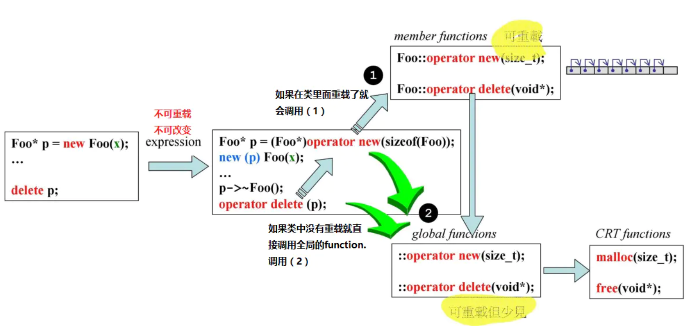
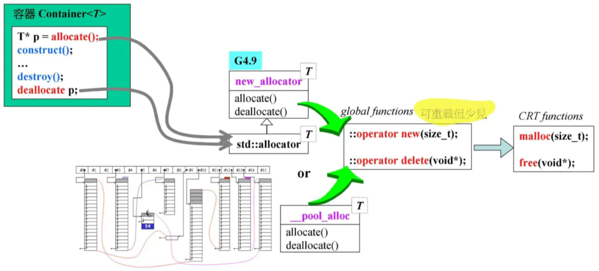

C++内存管理|03 重载
前面两篇【C++内存管理】从整体上来看了系统中四个调用层面上的内存分配和释放，然后详细的介绍了这四个层面中的操作符/函数的使用以及背后的调用关系。在这一篇我们就从内存管理实现的基本点重载开始，看看C++给我们提供了哪些可供用户使用的内存管理接口。
应用程序的设计中，我们所说的内存管理就是将系统要处理的内存分配和释放接管过来，内存池是常用的一种设计思路。内存池是在程序的一开始就分配一大块的内存，在后续需要使用内存的地方就直接从内存池中分配出来一块给程序使用，这样做的目的有两个：
- 避免程序反复的向系统申请和释放内存，造成性能上的损失。(通常我们认为
malloc的速度很慢，减少malloc的调用次数无疑可以使得程序运行的更快，malloc到底慢不慢呢，为什么很慢呢？我们后续再去细细的探讨。) - 除了程序运行时间上的考虑，另一方面就是空间上的考虑，每进行一次内存的分配实际上系统会多分配我们指定的大小，这个我们在后面会看到。此外统一进行内存管理还有利于避免内存泄露的出现。因为大量的地方使用
new/malloc进行分配内存，在写程序的时候容易出现忘记了写delete/free的情况。
要想了解该怎么进行内存管理，需要知道C++中给我们提供了哪些接口，我们利用这些接口又可以干什么。前面我们主要看的是系统各个层面上的内存管理的函数接口，以及它们的使用方式。那些都是系统/Runtime提供给我们的。现在我们来看看我们可以在这些操作中进行自定义的一些修改。重载是面向对象语言的一个重要的特性。使用重载我们可以在多层继承关系中，让子类能够运行带有自己特色的函数。
1.调用流程以及可重载部分
首先来看我们在C++中使用内存管理的操作的时候执行的流程，以及这些流程中那些步骤是允许我们去重载的。

上图中，我们在app中使用new来创建一个Foo的对象，这个过程在compiler中会解释成右边的形式，也就是调用operator new函数来分配内存，然后调用构造函数，创建对象。operator new又会去调用下一级的::operator new()函数，这个是一个全局的函数。有些地方也将他们叫做操作符，因为他们和+-*/的重载写法一样，叫法不是我们所要去深究的。这里需要注意：
- 1.
operator new和::operator new都是可以重载的; - 2.如果在类中重载了
operator new，就会去调用我们类中的operator new, 然后才是调用到全局的::operator new(); - 3.我们也可以在类中的
operator new或者全局的operator new中不去调用系统提供的接口，这样这个类就没办法在堆中申请内存了;
理解了上述几点，我们就可以看出，实际上我们重载的这些 相当于是hook了一些操作。
除了在app中直接使用new，我们还可以使用C++提供给我们的allocator, 这也是STL中容器使用的内存管理工具了。下图找你个就是allocator的调用流程。因为allocator是一个提供的工具，所以它里面是直接使用全局的::operator new的。

从上面的两个图中我们可以看出：
1.一旦我们重载了全局的::operator new，那么这个程序中所有的类，以及所有使用new的地方都会走到我们重载的那个全局::operator new中，这个影响是非常大的，也是在程序设计中很少直接这样用的一点。
2.在类中重载operator new, 只会影响这个类的操作，所以一般情况下，这种方式是在内存管理中常用的。
2.重载全局::operator new 和::operator delete
重载全局::operator new 和::operator delete，来验证我们图中的调用流程。
#include <iostream>
using namespace std;
void* myAlloc(size_t size) {
cout << "myAlloc(size_t size)" << endl;
return malloc(size);
}
void myFree(void* ptr) {
cout << "myFree(void* ptr)" << endl;
return free(ptr);
}
/*inline*/ void* operator new(size_t size) {
cout << "void* operator new(size_t size)" << endl;
return myAlloc(size);
}
/*inline*/ void* operator new[](size_t size) {
cout << "void* operator new[](size_t size)" << endl;
return myAlloc(size);
}
/*inline*/ void operator delete(void* ptr) {
cout << "void operator delete(void* ptr)" << endl;
return myFree(ptr);
}
/*inline*/ void operator delete[](void* ptr) {
cout << "void operator delete[](void* ptr)" << endl;
return myFree(ptr);
}
int main() {
int *pA = new int(10);
delete pA;
int* pArr = new int[20];
delete[] pArr;
return 0;
}
执行结果：

从上图中可以看到我们重载了全局的new/delete之后，我们在应用程序中使用new/delete的时候就会调用到我们重载的函数里面，而不是C++提供的new/delete里面，这就达到了一种类似hook的方式，我们可以在new/delete中自定义他们的行为。
但是这里要注意的是，一旦我们在程序中重载了全局的new/delete，那么这个应用程序中所有调用new/delete的地方都会转而使用我们重载的new/delete，这个影响在相对复杂的程序中影响是非常大的，所以一般情况下，重载全局new/delete的这种方式还是不太多见的。相对比较多见的就是在类中重载operator new 和operator delete。
3.类中重载operator new 和operator delete
验证了全局的重载之后，我们在类中重载operator new和operator delete，我们再来在类中进行new/delete的重载。
#include <iostream>
using namespace std;
class Foo {
public:
Foo() {
cout << "Foo::Foo()" << endl;
}
~Foo() {
cout << "Foo::~Foo()" << endl;
}
// 类中重载 new
void* operator new(size_t size) {
cout << "void* Foo::operator new(size_t size)" << endl;
return ::operator new(size);
}
// 类中重载 delete
void operator delete(void* ptr) {
cout << "void Foo::operator delete(void* ptr)" << endl;
return ::operator delete(ptr);
}
// 类中重载new[]
void* operator new[](size_t size) {
cout << "void* Foo::operator new[](size_t size)" << endl;
return ::operator new[](size);
}
// 类中重载 delete[]
void operator delete[](void* ptr) {
cout << "void Foo::operator delete[](void* ptr)" << endl;
return ::operator delete[](ptr);
}
};
int main()
{
Foo *foo = new Foo[10];
delete[] foo;
return 0;
}

从这个运行流程上可以看到，我们在类中重载之后，new/delete就被类中重载的函数接管了。如果我们既在类里面进行了重载，又对全局的进行了重载，那就是先调到类中的函数中，然后如果类中的函数调用全局的new/delete那就又进入了全局重载的函数里面了。
#include <iostream>
using namespace std;
void* myAlloc(size_t size) {
cout << "myAlloc(size_t size)" << endl;
return malloc(size);
}
void myFree(void* ptr) {
cout << "myFree(void* ptr)" << endl;
return free(ptr);
}
/*inline*/ void* operator new(size_t size) {
cout << "void* operator new(size_t size)" << endl;
return myAlloc(size);
}
/*inline*/ void* operator new[](size_t size) {
cout << "void* operator new[](size_t size)" << endl;
return myAlloc(size);
}
/*inline*/ void operator delete(void* ptr) {
cout << "void operator delete(void* ptr)" << endl;
return myFree(ptr);
}
/*inline*/ void operator delete[](void* ptr) {
cout << "void operator delete[](void* ptr)" << endl;
return myFree(ptr);
}
class Foo {
public:
Foo() {
cout << "Foo::Foo()" << endl;
}
~Foo() {
cout << "Foo::~Foo()" << endl;
}
// 类中重载 new
/*static*/ void* operator new(size_t size) {
cout << "void* Foo::operator new(size_t size)" << endl;
return ::operator new(size);
}
// 类中重载 delete
/*static*/ void operator delete(void* ptr) {
cout << "void Foo::operator delete(void* ptr)" << endl;
return ::operator delete(ptr);
}
// 类中重载new[]
/*static*/ void* operator new[](size_t size) {
cout << "void* Foo::operator new[](size_t size)" << endl;
return ::operator new[](size);
}
// 类中重载 delete[]
/*static*/ void operator delete[](void* ptr) {
cout << "void Foo::operator delete[](void* ptr)" << endl;
return ::operator delete[](ptr);
}
};
int main()
{
Foo *f = new Foo;
delete f;
Foo *foo = new Foo[3];
delete[] foo;
return 0;
}

上图就验证了我们所说的调用的流程。弄清楚了这些流程之后，我们就可以尝试进行内存管理（内存池等）了。
4.placement new的重载
- 原文作者：Binean
- 原文链接：https://bzhou830.github.io/post/20180112C++%E5%86%85%E5%AD%98%E7%AE%A1%E7%90%8603/
- 版权声明：本作品采用知识共享署名-非商业性使用-禁止演绎 4.0 国际许可协议进行许可，非商业转载请注明出处（作者，原文链接），商业转载请联系作者获得授权。